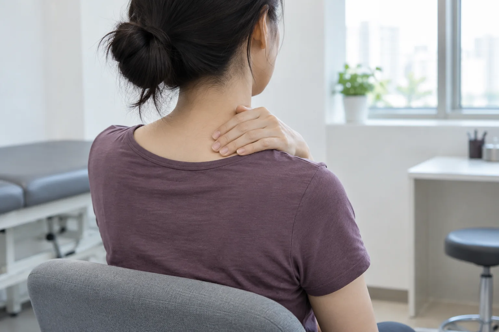
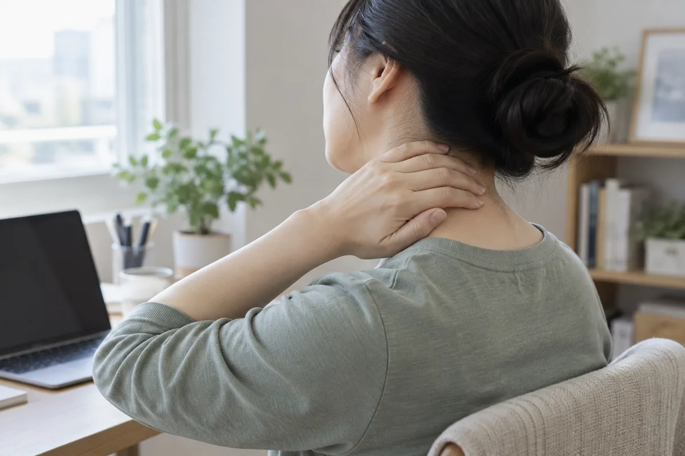
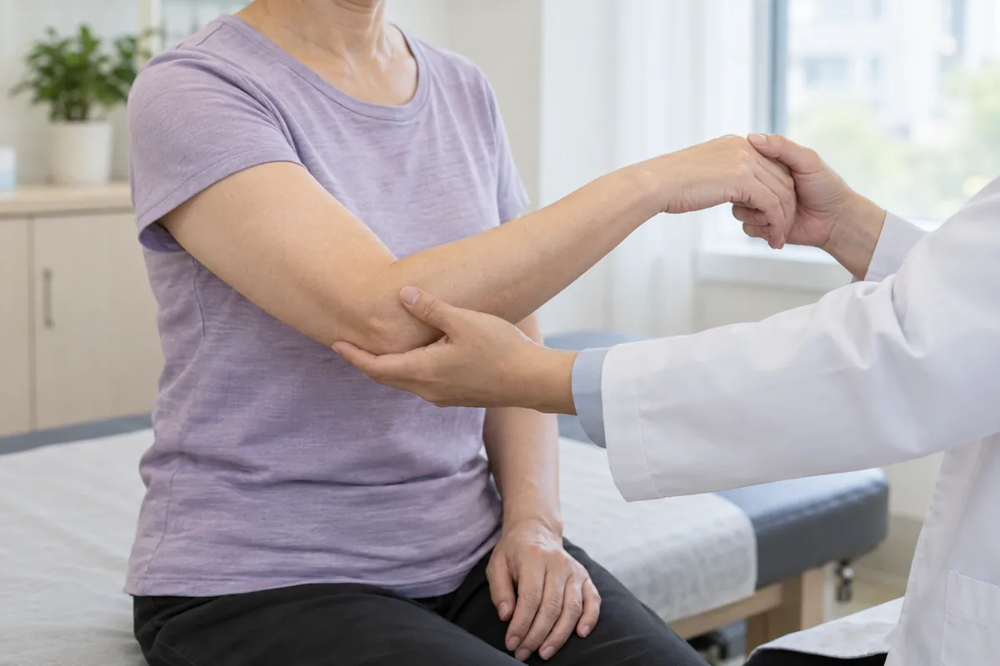
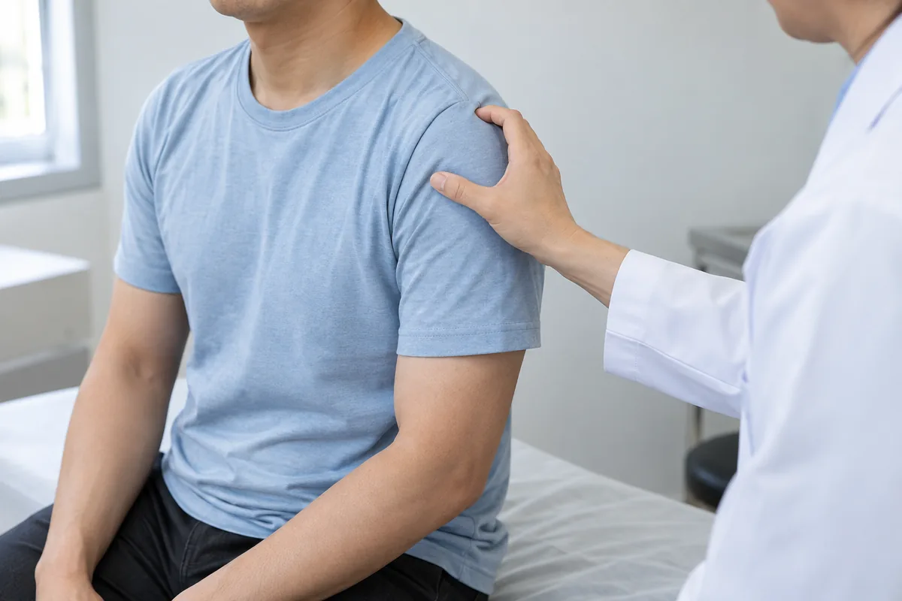
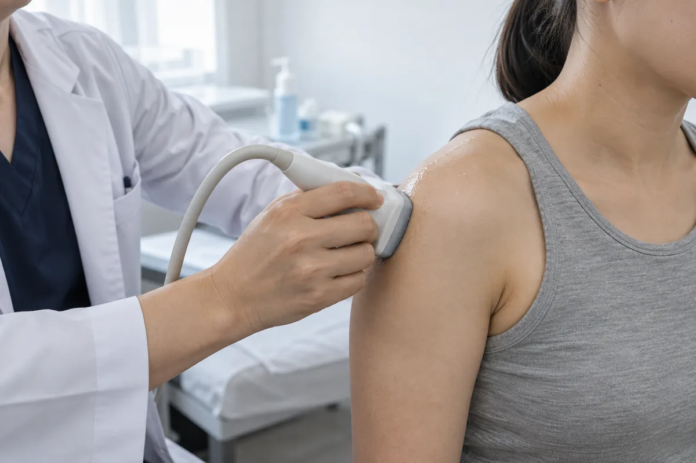
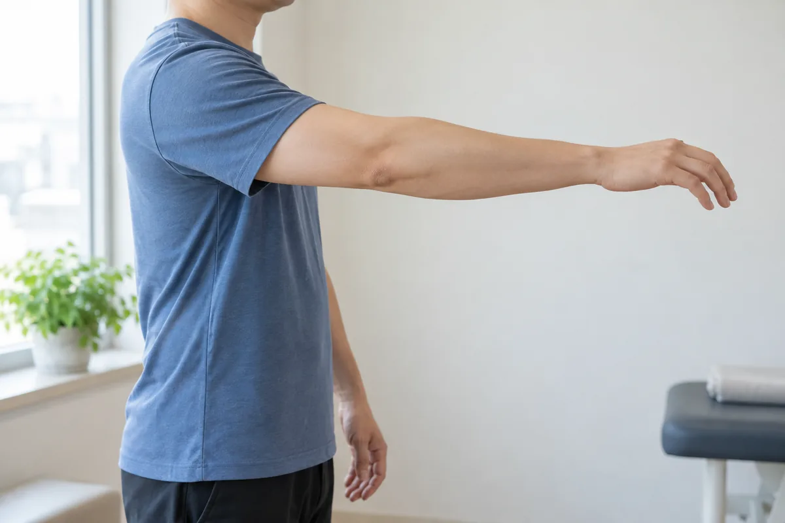

목·어깨
목과 어깨 통증은 오래 유지한 자세, 근육의 긴장, 힘줄이나 신경의 문제 등 여러 원인으로 나타납니다. 통증이 시작된 시점과 팔을 움직일 때의 불편, 저림 여부를 함께 살펴봅니다. 증상과 진찰 결과를 바탕으로 필요한 검사와 치료 방향을 안내합니다.
통증의 위치와 움직임, 생활 습관을 함께 살핀 뒤 필요한 치료 방향을 안내합니다.
CONDITIONS
목·어깨 주요 질환

목디스크(경추 추간판 탈출증)
목뼈 사이에서 충격을 흡수하는 디스크가 밀려나 신경을 자극하는 질환입니다. 노화에 따른 변화나 반복적인 부담, 외상 등이 관련될 수 있습니다. 목의 뻐근함뿐 아니라 팔의 감각과 근력 변화까지 함께 확인하는 것이 중요합니다.
목에서 어깨와 팔, 손가락으로 이어지는 통증이나 저림이 나타날 수 있습니다. 고개를 돌리거나 뒤로 젖힐 때 불편이 커지기도 합니다. 손의 감각이 둔해지거나 물건을 쥐는 힘이 약해진다면 진료를 통해 신경 상태를 확인해야 합니다.
거북목·일자목 증후군
거북목은 머리가 몸통보다 앞으로 나온 자세를, 일자목은 목뼈의 곡선이 줄어든 상태를 말합니다. 같은 자세를 오래 유지하면 목과 어깨 근육에 부담이 쌓일 수 있습니다. 자세나 영상에서 보이는 모양만으로 통증의 원인을 단정하지 않고 움직임과 증상을 함께 살핍니다.
목덜미와 어깨가 묵직하고 뻐근하며, 오랜 작업 뒤 불편감이 커질 수 있습니다. 목 주변 근육이 뭉치거나 두통과 피로감이 함께 나타나기도 합니다. 팔 저림이 지속되거나 힘이 떨어진다면 다른 신경 문제도 확인할 필요가 있습니다.

오십견(유착성 관절낭염)
어깨 관절을 감싸는 관절낭이 두꺼워지고 뻣뻣해져 움직임이 제한되는 질환입니다. 통증이 두드러지는 시기와 굳어지는 시기를 거치며 경과는 사람마다 다릅니다. 스스로 움직일 때뿐 아니라 다른 사람이 팔을 움직여 줄 때도 제한되는지 확인합니다.
팔을 위로 들거나 등 뒤로 돌리는 동작이 어려워 옷 입기와 머리 감기가 불편해집니다. 어깨가 묵직하게 아프고 밤에 통증이 심해질 수 있습니다. 통증이 줄더라도 뻣뻣함은 남을 수 있어 관절이 움직이는 범위를 함께 살펴야 합니다.

회전근개 질환(건염·파열)
팔을 들어 올리고 돌리는 데 관여하는 회전근개 힘줄에 염증이나 파열이 생긴 상태입니다. 반복적인 머리 위 동작, 노화에 따른 변화 또는 외상과 관련될 수 있습니다. 힘줄의 손상 정도와 근력, 일상에서 필요한 움직임을 함께 평가합니다.
팔을 들거나 내릴 때 어깨 바깥쪽이 아프고, 아픈 쪽으로 누우면 통증이 커질 수 있습니다. 물건을 들어 올리거나 팔을 돌리는 힘이 약해지기도 합니다. 다친 뒤 갑자기 팔을 들기 어려워졌다면 빠른 진료가 필요합니다.

석회성건염
어깨 힘줄 안에 칼슘 성분이 쌓이는 질환으로, 주로 회전근개에서 발생합니다. 석회가 있어도 증상이 없을 수 있지만 주변에 염증이 생기면 통증이 심해지기도 합니다. 증상과 움직임을 살피고 필요에 따라 엑스레이나 초음파로 상태를 확인합니다.
별다른 외상 없이 어깨가 갑자기 심하게 아프거나, 팔을 움직일 때 날카로운 통증이 생길 수 있습니다. 밤에 잠을 깨거나 어깨를 누를 때 아픈 경우도 있습니다. 통증과 운동 제한의 정도는 석회의 상태에 따라 다르게 나타납니다.

어깨 충돌증후군
팔을 들 때 어깨 위쪽 공간의 힘줄과 점액낭이 자극을 받아 통증이 생기는 상태입니다. 팔을 머리 위로 반복해 쓰는 활동이나 회전근개의 변화가 관련될 수 있습니다. 비슷한 증상을 보이는 다른 어깨 질환과 구분해 원인을 살펴봅니다.
팔을 옆이나 머리 위로 올릴 때 어깨 앞쪽과 바깥쪽이 아플 수 있습니다. 선반의 물건을 꺼내거나 옷을 입고 벗는 동작이 불편해지기도 합니다. 밤에 통증이 심해지거나 팔을 내리는 과정에서도 통증이 나타날 수 있습니다.